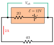
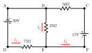

University Physics II

Direct Current Circuits
PQ: Global Power
The standard voltage in European households is 220 V, while in the United States it is 120 V.
- What is the equivalent power rating of a 100 W European bulb in the United States? (Hint: What is the resistance of the bulb.)
- How much current will the 100 W European bulb draw if installed in the United States?
PQ: Global Power (sol)
PQ: Battery Power Output
A battery's rated EMF is $\mathcal{E}=12$V. However, it is old and outputs a smaller terminal voltage, ($V_{ab}$). Model this imperfection as an additional resistor, $r=2$Ω, in the battery. When connected to a resistor $R=4$Ω a current of 2A flows.
- What is power output of the battery?
- What is the terminal voltage of the battery?
- How much power is dissipated by the battery’s internal resistance?
- What is the power consumption of resistor R?

PQ: Battery Power Output (sol)
PQ: KVL and KJL Problem
Set up and solve equations required to determine the currents in the following circuit. Clearly label the equations you create and designate if you used a KVL or KJL to get the equation.
